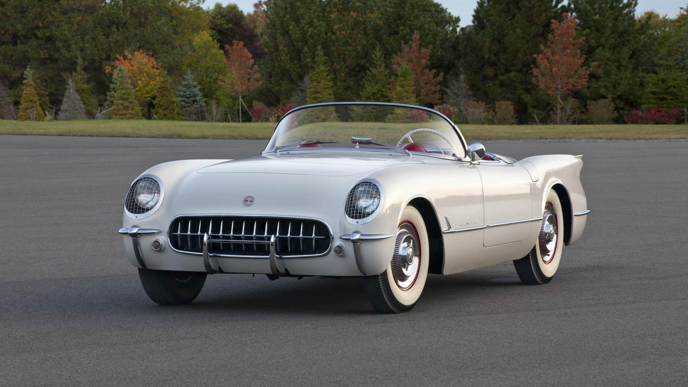
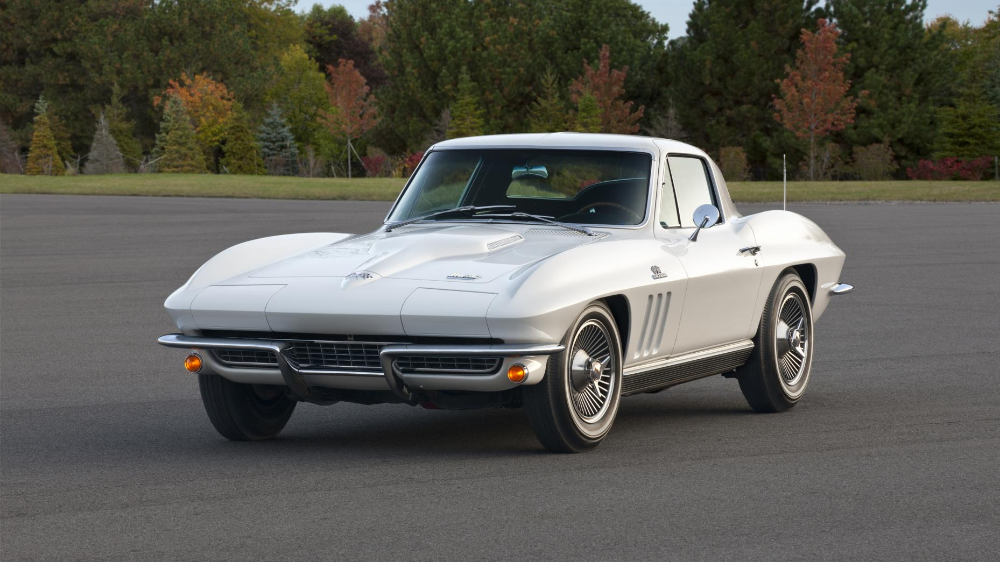
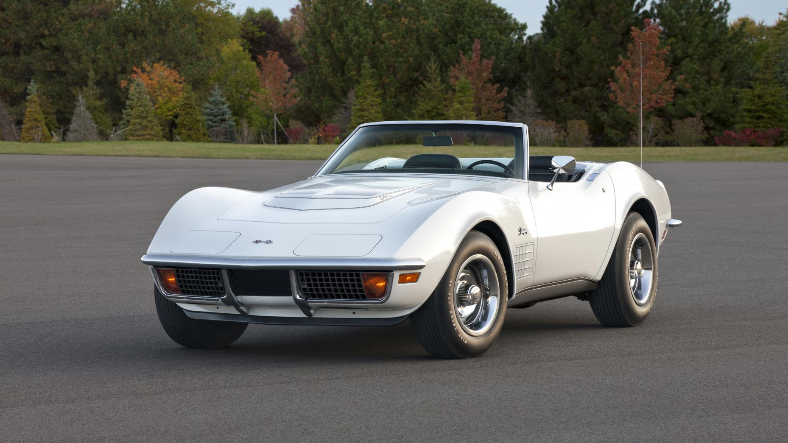
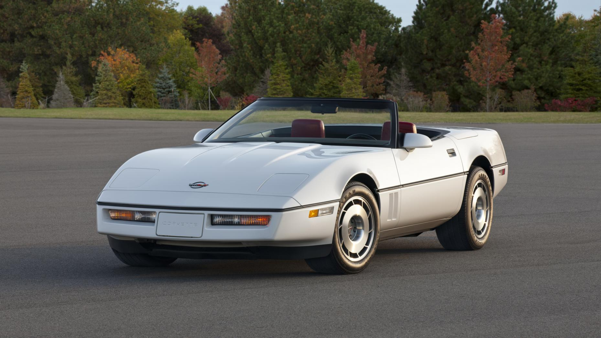

It's 65 years of the Corvette. Time for a quick history lesson
65 years old you say?
Yep. The Corvette is 65 years old, which means it’s about time Chevrolet gave us another special edition. So it’s called the Corvette Carbon 65, erm, Edition, and as its name would have you believe, it does indeed feature much carbon.
The “ground effects” are the most obvious bits – the spoiler, diffuser, side skirts and so-on. The $15,000 option package, which comes out this summer and can be specified on Grandsports and Z06s, also features a carbon roof (on Coupes), carbon steering-wheel and gloss carbon interior trim.
Non-carbon additions include special seats, special graphics, “Ceramic Matrix Gray” (or “grey”, if you’re a Brit and therefore spell things correctly) paintwork and blue brake calipers. No performance enhancements, but take it from us – the Z06 especially is fast enough as it is.
But what about its predecessors? Have a flick through our little gallery for a quick, Corvette-based history lesson…

C1 – 1953-1962
The first Corvettes rolled off the production line in 1953. Production was limited to 300 cars that year, and all were finished in this red/white colour scheme. The engine was a six-cylinder with around 150bhp, and the transmission a two-speed ‘Powerglide’. By 1955 you could spec a three-speed manual and small-block V8.

C2 – 1963-1967
The “Sting Ray” (yes, two words). Possibly our favourite shape of Corvette. Physically smaller than the car it replaced and possessing of independent rear suspension, the C2 was the first Corvette to be available with a race-ready Z06 option that added stronger shocks and springs, bigger anti-roll bars, power assisted front brakes and for a time, a vast 36-gallon endurance-spec fuel tank.

C3 – 1968-1982
Where it all went a bit pear-shaped. C3 ‘Vette looked the part early-on, but emissions regulations meant a lot of them weren’t especially fast. Sold well though.

C4 – 1984-1996
The first complete redesign since 1963, and thus a much more modern car than the C3. Early cars had a little over 200bhp, but by 1990 power was up to 375bhp in the ZR1, which had a 5.7-litre V8 jointly designed by GM and Lotus.
C5 – 1997-2004
Another all-new Corvette. C5 also marked the return of the Z06 - it was lighter than the standard car, had uprated suspension, revised gear ratios and a titanium exhaust. Chevrolet claimed the C5 Z06 could lap the ‘Ring in under eight minutes. This is fast even by today’s standards.
C6 – 2005-2013
The first Corvette without concealed headlights since 1962 was effectively a refined C5. It was shorter but had a longer wheelbase, more powerful, more efficient engines and a nicer interior. Its modifications too extensive to list, the Z06 could hit 60mph in less than four seconds, and top 200mph.
Share this page:

Thanks for helping us!